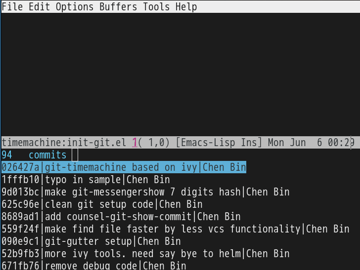

No worries when elpa is down
I use one liner shell command to clone Emacs Lisp Package Archive (ELPA):
mkdir -p ~/elpaclone && cd ~/elpaclone && curl -L https://elpa.gnu.org/packages/archive-contents | perl -pe 's/(^\(1|\n)//g' | perl -pe 's/\]\)/])\n/g' | perl -pe 's/^ *\(([a-z0-9A-Z-]*).*\[\(([0-9 ]*).*(single|tar).*/\1-\2.\3/g' | perl -pe 's/ /./g' | perl -pe 's/single/el/g' | perl -pe 's/\)//g' | xargs -I {} curl -L -O https://elpa.gnu.org/packages/{} && curl -L -O https://elpa.gnu.org/packages/archive-contents
The https://elpa.gnu.org/packages/archive-contents contains all the information of packages. I re-organize it to make sure each line corresponds to one package. Then I use cURL to download everything.
Usage is simple.
Insert below line at the beginning of ~/.emacs when elpa.gnu.org is down:
(setq package-archives '(("elpaclone" . "~/elpaclone")))
This solution also works for MELPA.
Use js2-mode as minor mode to process JSON
Most people use js2-mode as a major mode for javascript. For JSON file, they prefer json-mode.
But if you truly understand the meaning of Software Freedom, you will realize "major-mode" and "minor-mode" are man-made concepts which actually have no difference.
In essence, a major mode is just a collection of APIs. We could use its APIs without enabling it, perfectly complying with "The freedom to run the program as you wish, for any purpose (freedom 0).".
Here are two examples.
1 Validate JSON
M-x my-validate-json-or-js-expression to validate the buffer.
C-u my-validate-json-or-js-expression to validate selected region.
(defun my-validate-json-or-js-expression (&optional not-json-p)
"Validate buffer or select region as JSON.
If NOT-JSON-P is not nil, validate as Javascript expression instead of JSON."
(interactive "P")
(let* ((json-exp (if (region-active-p) (buffer-substring-no-properties (region-beginning) (region-end))
(buffer-substring-no-properties (point-min) (point-max))))
(jsbuf-offet (if not-json-p 0 (length "var a=")))
errs
first-err
(first-err-pos (if (region-active-p) (region-beginning) 0)))
(unless not-json-p
(setq json-exp (format "var a=%s;" json-exp)))
(with-temp-buffer
(insert json-exp)
(unless (featurep 'js2-mode)
(require 'js2-mode))
(js2-parse)
(setq errs (js2-errors))
(cond
((not errs)
(message "NO error found. Good job!"))
(t
;; yes, first error in buffer is the last element in errs
(setq first-err (car (last errs)))
(setq first-err-pos (+ first-err-pos (- (cadr first-err) jsbuf-offet)))
(message "%d error(s), first at buffer position %d: %s"
(length errs)
first-err-pos
(js2-get-msg (caar first-err))))))
(if first-err (goto-char first-err-pos))))
2 Print JSON path
For example, you got JSON string {"a": {"b": 3}}. If you place cursor over 3 and M-x my-print-json-path, you got output a.b.
(defun my-print-json-path (&optional hardcoded-array-index)
"Print the path to the JSON value under point, and save it in the kill ring.
If HARDCODED-ARRAY-INDEX provided, array index in JSON path is replaced with it."
(interactive "P")
(cond
((memq major-mode '(js2-mode))
(js2-print-json-path hardcoded-array-index))
(t
(let* ((cur-pos (point))
(str (buffer-substring-no-properties (point-min) (point-max))))
(when (string= "json" (file-name-extension buffer-file-name))
(setq str (format "var a=%s;" str))
(setq cur-pos (+ cur-pos (length "var a="))))
(unless (featurep 'js2-mode)
(require 'js2-mode))
(with-temp-buffer
(insert str)
(js2-init-scanner)
(js2-do-parse)
(goto-char cur-pos)
(js2-print-json-path))))))
3 Summary
As you can see, I use a few APIs from js2-mode while js2-mode is still disabled:
- js2-errors
- js2-get-msg
- js2-print-json-path
- js2-init-scanner
- js2-do-parse
烟台炖土豆丝
- 切丝浸入冷水中
- 干辣椒蒜头切碎小火至略焦黄 (两三个蒜瓣对应四个土豆)
- 放入土豆丝八角(一到两个,不要更多)炒到变软
- 放入水,几滴醋,盖上小火焖一下,留点水

Enhance emacs-git-gutter with ivy-mode
CREATED:
UPDATED:
emacs-git-gutter shows an icon in the gutter area. The icon indicating whether a line has been inserted, modified or deleted in Emacs.
I usually use M-x git-gutter:previous-hunk or M-x git-gutter:next-hunk to navigate between the hunks.
But if there are too many hunks in one file, ivy-mode is more efficient:
(require 'ivy)
(require 'git-gutter)
(defun my-reshape-git-gutter (gutter)
"Re-shape gutter for `ivy-read'."
(let* ((linenum-start (aref gutter 3))
(linenum-end (aref gutter 4))
(target-line "")
(target-linenum 1)
(tmp-line "")
(max-line-length 0))
(save-excursion
(while (<= linenum-start linenum-end)
(goto-line linenum-start)
(setq tmp-line (replace-regexp-in-string "^[ \t]*" ""
(buffer-substring (line-beginning-position)
(line-end-position))))
(when (> (length tmp-line) max-line-length)
(setq target-linenum linenum-start)
(setq target-line tmp-line)
(setq max-line-length (length tmp-line)))
(setq linenum-start (1+ linenum-start))))
;; build (key . linenum-start)
(cons (format "%s %d: %s"
(if (eq 'deleted (aref gutter 1)) "-" "+")
target-linenum target-line)
target-linenum)))
(defun my-goto-git-gutter ()
(interactive)
(if git-gutter:diffinfos
(ivy-read "git-gutters:"
(mapcar 'my-reshape-git-gutter git-gutter:diffinfos)
:action (lambda (e)
;; ivy9+ keep `(car e)'
;; ivy8- strip the `(car e)'
;; we handle both data structure
(unless (numberp e) (setq e (cdr e)))
(goto-line e)))
(message "NO git-gutters!")))
Screenshot:

Turn off linum-mode when file is too big
CREATED:
UPDATED:
It's well known that linum-mode slows Emacs when the file contains thousands of lines.
Here is the fix,
(defun buffer-too-big-p ()
(or (> (buffer-size) (* 5000 80))
(> (line-number-at-pos (point-max)) 5000)))
(add-hook 'prog-mode-hook
(lambda ()
;; turn off `linum-mode' when there are more than 5000 lines
(if (buffer-too-big-p) (linum-mode -1))))
Though nlinum-mode has performance, I still stick to linum-mode because git-gutter only supports linum-mode.
You can check the interesting discussion about git-gutter/linum-mode/nlinum-mode. Syohei Yoshida made git-gutter 95% functional when linum-mode off.
How to manage Emacs packages effectively
I developed a few package managing techniques after reading Steve Purcell's Emacs setup.
The techniques are compatible with other plugin (use-package, for example) based on package.el.
Emacs Lisp knowledge is required to read this article.
1 Technique 1, Do NOT use package.el for certain packages
Create directory site-lisp at ~/.emacs.d, then insert below code into ~/.emacs.d/init.el,
(if (fboundp 'normal-top-level-add-to-load-path)
(let* ((my-lisp-dir "~/.emacs.d/site-lisp/")
(default-directory my-lisp-dir))
(progn
(setq load-path
(append
(loop for dir in (directory-files my-lisp-dir)
unless (string-match "^\\." dir)
collecting (expand-file-name dir))
load-path)))))
You can create a sub-directory under ~/.emacs.d/site-lisp/ and place your package's source code inside that sub-directory.
2 Technique 2, Create your own package repository
Step 1, Place two files "archive-contents" and "hello-1.0.0.el" in any directory. Say ~/.emacs.d/localelpa.
Content of archive-contents:
(1
(hello . [(1 0 0) nil "Say hello" single])
)
Content of hello-1.0.0.el:
;;;###autoload
(defun hello-say ()
(interactive)
(message "Hi, hello!"))
(provide 'hello)
Step 2, insert below code into ~/.emacs,
(add-to-list 'package-archives '("localelpa" . "~/.emacs.d/localelpa"))
Step 3, restart Emacs and press M-x list-packages. As you can see, you can install package hello from repository ~/.emacs.d/localelpa.
I'm using rainbow-mode from ELPA(https://elpa.gnu.org/). But ELPA which shuts down sometimes. With above technique, my setup is never dependent on the reliability of GNU's website.
I also create plugin elpa-mirror which creates a local repository from all the installed packages. The local repository could also be converted to remote repository easily using Dropbox and Github.
It also solve the issue of orphan package. In order to get a clean setup without orphan packages, you only need delete everything from ~/.emacs.d/elpa and set the repository to the local one build by elpa-mirror. It takes 30 seconds to install 300 packages.
3 Technique 3, advice package--add-to-archive-contents to filter packages
Insert below code into ~/.emacs,
;; List of VISIBLE packages from melpa-unstable (http://melpa.org)
;; Feel free to add more packages!
(defvar melpa-include-packages
'(bbdb
color-theme
company-c-headers)
"Don't install any mELPA packages except these packages")
(defvar package-filter-function nil
"Optional predicate function used to internally filter packages used by package.el.
The function is called with the arguments PACKAGE VERSION ARCHIVE, where
PACKAGE is a symbol, VERSION is a vector as produced by `version-to-list', and
ARCHIVE is the string name of the package archive.")
;; Don't take MELPA versions of certain packages
(setq package-filter-function
(lambda (package version archive)
(or (not (string-equal archive "melpa"))
;; install package in whitelist
(memq package melpa-include-packages)
;; use all color themes
(string-match (format "%s" package) "-theme"))))
(defadvice package--add-to-archive-contents
(around filter-packages (package archive) activate)
"Add filtering of available packages using `package-filter-function', if non-nil."
(when (or (null package-filter-function)
(funcall package-filter-function
(car package)
(funcall (if (fboundp 'package-desc-version)
'package--ac-desc-version
'package-desc-vers)
(cdr package))
archive))
ad-do-it))
Above code hide the packages which don't meet our criteria.
The criteria is just a simple boolean expression defined in package-filter-function.
We install packages if it's NOT from melpa-unstable OR it's listed in melpa-include-packages OR its name contains "-theme" (it's color theme package).
Feel free to use any boolean expression to filter packages.
The initial version of above code was copied Steve Purcell's setup years ago.
I developed my own strategy based on his code. The first thing I did is reverse his logic. In his code melpa-unstable take the highest priority while in my code melpa-unstable takes the lowest priority.
4 Summary
You can combine my techniques to solve any package problem.
For example, package A is dependent on package B. Both A and B have two versions, 1.0 and 2.0:
- A 2.0 can use B 1.0 and B 2.0, but A 1.0 can ONLY use B 1.0
- A 2.0 can ONLY use B 2.0, and A 1.0 can only use B 1.0
The solution is simple. We create a local repository to host B 1.0 and A 1.0 (Technique 2), then in package-filter-function (Technique 3), we will decide which version of to use the with information collected from B. As I said, package-filter-function only returns a boolean expression. So you can design any strategy.
I know somebody believed Emacs is worse than IDE because its package manager after "studying" it for seven years.
It took me fifteen minutes to reach the opposite conclusion when I was still absolute Emacs dummy.
It's possibly I learned the Emacs by cloning and reading code. You can read my guide "Master Emacs In One Year" for more details.
New git-timemachine UI based on ivy-mode
UPDATED:
CREATED:
When using git-timemachine, I prefer start from my selected revision instead of HEAD.
Here is my code based on ivy-mode,
(defun my-git-timemachine-show-selected-revision ()
"Show last (current) revision of file."
(interactive)
(let* ((collection (mapcar (lambda (rev)
;; re-shape list for the ivy-read
(cons (concat (substring-no-properties (nth 0 rev) 0 7) "|" (nth 5 rev) "|" (nth 6 rev)) rev))
(git-timemachine--revisions))))
(ivy-read "commits:"
collection
:action (lambda (rev)
;; compatible with ivy 9+ and ivy 8
(unless (string-match-p "^[a-z0-9]*$" (car rev))
(setq rev (cdr rev)))
(git-timemachine-show-revision rev)))))
(defun my-git-timemachine ()
"Open git snapshot with the selected version. Based on ivy-mode."
(interactive)
(unless (featurep 'git-timemachine)
(require 'git-timemachine))
(git-timemachine--start #'my-git-timemachine-show-selected-revision))
Screenshot after M-x my-git-timemachine,
